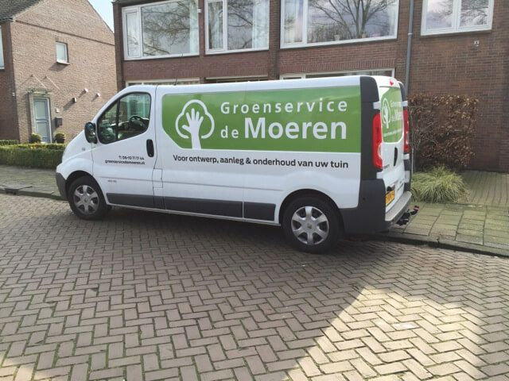

Effen · Breda · Teteringen · Prinsenbeek · Bavel · Ulvenhout · Etten-Leur · Oosterhout · Rijsbergen · Zevenbergen · Dongen · Tilburg
Heeft u een vraag of wilt u een vrijblijvende afspraak of offerte? Neem contact op met Richard Moerenhout.
06-10711744